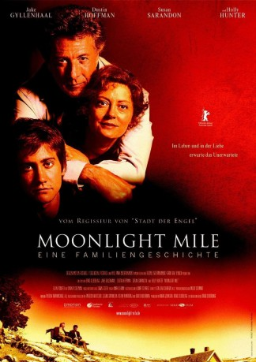
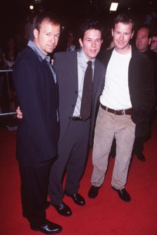
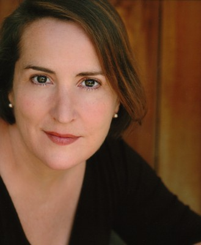

#11868 Moonlight Mile - Eine Familiengeschichte
Alternativ: Moonlight Mile (Englischer Titel)
 
 IMDB-Wertung: 6.6 / 10
IMDB-Wertung: 6.6 / 10  Tomatometer: 63
Tomatometer: 63  Metascore: 59
Metascore: 59 
Mit dem Tod seiner Verlobten Diana bricht für Joe eine Welt zusammen. Nicht nur für ihn sondern auch für die Eltern der Verstorbenen. Dianas Vater will den jungen Mann um jeden Preis in seiner Firma anspannen, was dem aber zu viel ist, zumal sich die Eltern auch auf Schritt und Tritt an ihn heften. Und dann lernt Joe auch noch sehr schnell eine neue Frau kennen: Die Thekerin Bertie trauert ebenfalls um ihren Freund, der in Vietnam gefallen ist. Ist das aber eine günstige Ausgangsposition für eine neue Beziehung?
Jahr: 2002
Dauer: 112 Minuten
FSK: 12
Land: USA Studio: Touchstone Home VideoTonspuren:
Untertitel:
Auflösung: 1080p (1920x840) Größe: 3532 MB
Genre: Drama, Liebe
Regisseur:  Brad Silberling
Brad Silberling
Drehbuch: Brad Silberling
Soundtrack: Mark Isham
Darsteller:
 Jake Gyllenhaal als Joe Nast
Jake Gyllenhaal als Joe Nast Dustin Hoffman als Ben Floss
Dustin Hoffman als Ben Floss Susan Sarandon als Jojo Floss
Susan Sarandon als Jojo Floss- Alexia Landeau als Cheryl
 Bob Clendenin als Server #1
Bob Clendenin als Server #1- Jim Fyfe als Server #2
 Mary Ellen Trainor als Mrs. Meyerson
Mary Ellen Trainor als Mrs. Meyerson Richard Fancy als Mr. Meyerson
Richard Fancy als Mr. Meyerson Allan Corduner als Stan Michaels
Allan Corduner als Stan Michaels Holly Hunter als Mona Camp
Holly Hunter als Mona Camp- Ellen Pompeo als Bertie Knox
- Edward Lachman als Photographer
 Gordon Clapp als Tanner
Gordon Clapp als Tanner Dabney Coleman als Mike Mulcahey
Dabney Coleman als Mike Mulcahey- Mary Catherine Garrison als Caroline
- Audrey Marie Anderson als Audrey Anders
- Virginia Newcomb als Cheryl's Friend #2
- Elizabeth Janas als Cheryl's Friend #3
 Richard T. Jones als Ty
Richard T. Jones als Ty- Lenny Clarke als Gordy
-  Robert Wahlberg als Pinky
- Dee Nelson als Waitress
 McNally Sagal als Mrs. Tippet
McNally Sagal als Mrs. Tippet Phil Reeves als Mr. Don Tippet
Phil Reeves als Mr. Don Tippet Roxanne Hart als June Mulcahey
Roxanne Hart als June Mulcahey- Lisa Anne Hillman als Jillian Mulcahey
 Rachel Singer als Rhonda Ketch
Rachel Singer als Rhonda Ketch- John Balma als Walter Ketch
- Mark Lotito als Diner Manager
 Paul Pape als Bar Voice
Paul Pape als Bar Voice- Jessica Gee-George als Bar Voice
-  Jillian Armenante als Caterer (uncredited)
- Hilary Barraford als Bride (uncredited)
- Sandra Blaney als Restaurant Customer (uncredited)
- Janet Borgman als Family Member at Funeral (uncredited)
- Nicole Marie Comer als Photography Studio Bride (uncredited)
- David J. Cummins als Townsperson (uncredited)
- Altara Michelle als Young Girl at Restaurant (uncredited)
- Camden Munson als (uncredited)
- Richard Messing als Rabbi
- Lev Friedman als Cantor
- Marcia Mitzman Gaven als Fashion Plate
- Careena Melia als Diana Floss
- Gary Hetzler als Speedwalker
- Colombe Jacobsen-Derstine als Patty
- Tom Carey als Baxter
 Paul Perri als Public Defender
Paul Perri als Public Defender Tom Dahlgren als Judge
Tom Dahlgren als Judge- David F. Wheeler als Diner Grandfather
- Alexandra Hoffman als Diner Granddaughter
Datei: X:\2002\Moonlight Mile - Eine Familiengeschichte (2002, FSK12, 1920x840).mkv seit 02.10.2019
Festplatte: Gemischt-01+Anime
 Es gibt insgesamt 93 Filme in der Gruppe '2002'
Es gibt insgesamt 93 Filme in der Gruppe '2002'